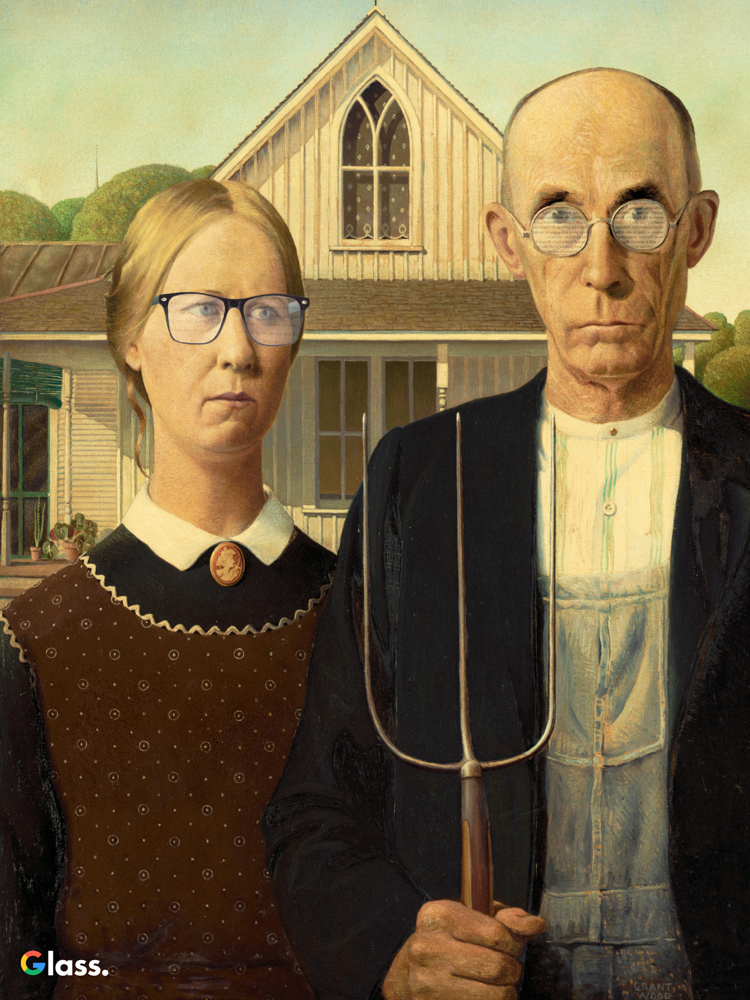

Have you checked your prescription?
December 11, 2019 - 9:00 AM ET
 NINA NAVAZIO
NINA NAVAZIO
Just a few days ago Google released their newest item to rival the Apple Watch: Google Glass. No, that’s not de ja vu. Google just revamped and rereleased their absolute smash-hit Google Glass (sarcasm, for those of you who can't read it through the screen). This time, it’s got better specs (pun intended) and it’s way more streamlined for more wide-spread, public use than the first Glasses that were only released for a select few back in 2013.
Although they’re using the same technology on the inside, these glasses have a completely different look and feel than the last iteration. That is, they look just like regular glasses. That’s right—soon enough, you won’t be able to tell the difference between someone looking at you in person and someone looking through your Instagram. And while there's still a reflection of the wearer's current open window on the glass part, Google experts say it will be gradually phased out in new versions. “Just wait,” says Brian Wulfric, “soon enough you’ll be able to see straight through, both ways.”
He says the new Google Glass is a natural progression of the computer-age. “We’ve already made them once, so why can’t we make them again?” It’s all part of the adjacent possible, one of the pillars of Google (included in that list is liquid networks, the slow hunch, and serendipity). The glasses were always possible in Google's inventive environment, it just took the right timing and resources. The Google Glass was part of Wulfric’s 10-percent project, a time set-aside for other projects Google engineers want to spend their time on. He managed a team that worked on it for six years, ever since the last Glasses failed.
“It really wouldn’t have been possible without them, though,” he says. “And surprisingly, the technology that makes those foldable phones was helpful, too.” Wulfric says the thin screens used in those origami touchscreens was easy to adapt into an even thinner, non-touchscreen device (as he says, you shouldn't tap the glass). Then, after updating them to an 8k resolution, all it took was a little camera on the front of the screen to see exactly what’s in front of you. So technically you aren’t looking through glass but rather through a screen that has twice as much resolution as a 4k television backed by glass for support. It’s fully loaded with the new Android 10 Quiche, including a bootstrap that can be adjusted for your glass prescription. So when you get a pair of Glasses, you’ll be getting a pair of glasses for life. The prescription can be adjusted at any time, even for reading or distance within seconds (and there are already apps in development to adjust automatically, to zoom in on a book in front of you automatically). And the good news is that there’s still glass backing the screen, so even if you run out of battery power and the screen turns off, you won't be totally blind.
The battery lasts for about 15 hours, with a 5,000 mAh battery sleekly hidden in the frame. “Just like the whole bottom of a Tesla is a battery,” says Wulfric, “so is the frame of the new Google Glass.” The battery life on the Glasses will be a huge plus, allowing for over 5 hours of non-stop video streaming. Rough commute? Bored in class? Covered. And that’s not to mention how much longer the battery will last just giving you small notifications or doing quick (Google) searches instead of intense streaming. The Glasses also have no charging port, fully supporting wireless charging as they sit on your nightstand while you sleep.

The Glasses connect to your phone via bluetooth and are essentially an extension of your screen. Each lense projects the same thing so you see an augmented-reality overlay on the world in front of you. It’s in the style of material design, using the classic card-style notifications. That way, you can be sitting in a meeting and not even have to look down at your watch to see an email—now you can see it from the comfort of wherever you look. Or if you meet someone new, you can immediately pull up their FaceBook or any public social media site. Now you can get to know someone before they even say their name. “If it’s online, it’s public anyway,” says Wulfric. “It only makes sense. Search someone while you’re meeting them, since you’ll search them when you’re home anyway.” Wulfric confirms that lenses are unreadable to anyone but the wearer. Granted, the person looking at you can somewhat see the general color of the page you’re on, but since most pages are mostly white, it’s pretty difficult to descern exactly what you’re looking at. “Natural protection, like a proxy,” he says. “Fool proof. No one can see what you see.”
And although we’ve all heard the rumors about how bad it is to look at a screen all day, we’ve yet to see a clear screen like this one on the market, so the true effects have yet to be felt. There’s also a blue light setting that has passed all clinical testing for long-term eye exposure.
But regardless of clinical testing, these Glasses have already made a cultural impact. Just last night posters of iconic paintings wearing the new Google Glasses appeared all over the NYC subway. They’ve been tweeted and reblogged over a million times already, so if there’s one thing Google is good at, it’s viral marketing. “And making great products!” laughs Wulfric. “We aren’t positive the exact impacts this will have on America, and eventually the world,” he says, referencing the current America-only release of the product, but he’s confident about the functionality and timelessness of this new tech. According to Wulfric, these Glasses are here to stay. “Google Glasses are ready to help us see the future, today.”